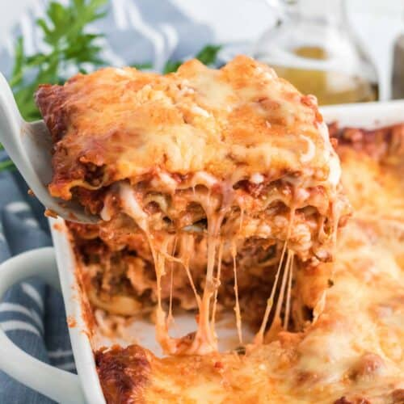

Mama Mia! Lasagna Recipe
Mama Mia! Lasagna Recipe

This lasagna recipe is a classic, with layers of pasta, meat sauce, and cheese. It's a comforting and satisfying meal that is perfect for gatherings with friends and family.
- Ingredients -
- 1 pound ground beef
- 1 small onion, chopped
- 1 clove garlic, minced
- 1 (28 oz) can crushed tomatoes
- 1 tsp salt
- 1/2 tsp black pepper
- 1/2 tsp Italian seasoning
- 1/4 tsp red pepper flakes (optional)
- 9 lasagna noodles
- 1 1/2 cups ricotta cheese
- 1 cup grated mozzarella cheese
- 1/2 cup grated parmesan cheese
- Steps -
- Preheat the oven to 350°F (175°C).
- In a large skillet, cook the ground beef over medium heat until it is browned and crumbled. Drain off any excess fat.
- Add the onion and garlic to the skillet and cook for another 5 minutes, or until the onion is translucent.
- Stir in the crushed tomatoes, salt, pepper, Italian seasoning, and red pepper flakes (if using). Bring the mixture to a simmer and let it cook for 10-15 minutes, or until it has thickened slightly.
- Meanwhile, cook the lasagna noodles according to the package instructions. Drain and rinse the noodles with cold water to stop the cooking process.
- Spread a thin layer of the meat sauce in the bottom of a 9x13 inch baking dish. Arrange 3 noodles on top of the sauce. Spread 1/2 cup of the ricotta cheese over the noodles, and sprinkle 1/2 cup of the mozzarella cheese over the top. Repeat this process with 2 more layers of noodles, sauce, ricotta, and mozzarella.
- For the final layer, arrange the remaining 3 noodles on top of the sauce. Spread the remaining meat sauce over the noodles, and top with the remaining 1/2 cup of mozzarella and 1/2 cup of parmesan cheese.
- Cover the dish with foil and bake for 25 minutes. Remove the foil and bake for an additional 20-25 minutes, or until the top is golden and bubbly.
- Let the lasagna cool for a few minutes before serving. Enjoy!
Return to the main page